Deux camps, deux couleurs.
Toute l'identité de Virio raconte un face-à-face : l'escroc d'un côté, la protection de l'autre. Chaque couleur appartient à un camp, et n'en change jamais.
Il n'apparaît que là où Virio agit : le bouclier, le « STOP. », le bouton qui ramène au site officiel, l'appel à s'inscrire.
Il ne marque que ce qui appartient à l'arnaque : le faux domaine, le faux site, les étiquettes « Faux domaine », le niveau de risque.
Tout le reste vit sur un fond encre presque noir. Les objets du réel gardent leurs vraies couleurs : un SMS reste gris clair, un lien reste bleu, un site de l'État garde son bleu-blanc-rouge.
Logo
Un bouclier, et à l'intérieur une capsule verticale : c'est la forme du lien piégé dans le SMS, devenue la pupille d'un œil qui veille. Virio regarde le lien à votre place.
Construction
Les versions
La version principale vit sur fond encre. Chaque version existe en SVG (à privilégier) et en PNG transparent.




Zone de protection
Autour du logo, on laisse toujours un espace vide au moins égal à la hauteur de la pupille (« x »). Aucun texte, bord ni image n'y entre.
Tailles minimales
En dessous de 24 px, le symbole passe en version pleine : le contour fin disparaîtrait à l'écran.
16 px minimum
24 px minimum
24 px de haut minimum
64 px de haut minimum
À ne pas faire
Couleurs
Une base encre, du texte clair, et deux couleurs qui ne servent qu'à raconter qui fait quoi.
Couleurs principales
- HEX
- #07090D
- RGB
- 7 9 13
- CSS
- --ink
Le fond de tout : site, visuels, réseaux.
- HEX
- #2BC97A
- RGB
- 43 201 122
- CSS
- --safe
Uniquement là où Virio agit.
- HEX
- #E5484D
- RGB
- 229 72 77
- CSS
- --threat
Uniquement sur ce qui appartient à l'escroc.
Couleurs d'appui
- HEX
- #121722
- HEX
- #252D3B
- HEX
- #F2F4F8
- HEX
- #8C96A8
- HEX
- #12965A
- HEX
- #06140C
- HEX
- #C8363B
- HEX
- #3A1418
« Vert sur clair » remplace le vert Virio sur fond blanc. « Vert encre » est le texte posé sur le vert. « Rouge fort » porte les étiquettes blanches, « rouge profond » le fond des badges d'alerte.
Les proportions
Un visuel Virio est d'abord sombre. Le vert et le rouge restent des touches : s'ils prennent toute la place, ils ne racontent plus rien. La seule exception est le plan « STOP. », entièrement vert.
Contrastes vérifiés
| Association | Contraste | Usage |
|---|---|---|
| Aa Texte sur encre | 18,1 : 1 | Tout le texte |
| Aa Gris sur encre | 6,7 : 1 | Légendes, sources |
| Aa Vert sur encre | 9,2 : 1 | Mots et icônes de Virio |
| Aa Vert encre sur vert | 8,7 : 1 | Boutons, plan « STOP. » |
| Aa Rouge sur encre | 5,1 : 1 | Faux domaines |
| Aa Blanc sur rouge fort | 5,2 : 1 | Étiquettes « Faux domaine » |
| Aa Vert sur clair sur blanc | 3,8 : 1 | Logo et grands titres seulement, pas de petit texte |
Typographie
Deux familles gratuites (licence libre OFL). Inter porte la voix, très grasse et serrée pour les titres. JetBrains Mono est réservée à ce qu'on doit pouvoir vérifier : adresses et chiffres.
interlettrage −0,04 em
Un clic suffit.
interlettrage −0,035 em
Avec Virio, ça s'arrête là.
17 px, interligne 1,55
Le faux site est bloqué avant que vous ne tapiez quoi que ce soit, et Virio vous explique pourquoi, en clair.
seulement dans l'interface
ARNAQUE DÉTECTÉE
antai-paiement-gouv.com
antai.gouv.fr
Les titres ne dépassent jamais −0,04 em d'interlettrage. La hiérarchie vient de la taille et de la graisse, jamais de la couleur seule. Le mono n'est pas un décor « tech ».
Éléments graphiques
Les mêmes objets reviennent partout, du film au site et aux réseaux. Ils viennent du réel : on montre l'arnaque telle qu'elle arrive.
La carte de SMS
Une vraie notification, gris clair, avec son lien bleu. Barrée d'un contour rouge et d'une étiquette quand Virio l'a repérée.
L'écran de blocage
Le moment où Virio parle. Il dit ce qui se passe, pourquoi, et propose la bonne porte.
Site frauduleux bloqué
- Imite un service de l'État
- Domaine créé il y a 2 jours
Le bouton vert est l'unique appel à l'action d'un écran. Les icônes sont dessinées au trait, d'une seule épaisseur ; pas d'émojis à la place des icônes.
Mouvement
Trois courbes, chacune avec un seul rôle. Les mêmes dans le film et sur le site.
cubic-bezier(0.16, 1, 0.3, 1)Ce qui entre et se pose : textes, cartes, écran de blocage.
cubic-bezier(0.65, 0, 0.35, 1)Les mouvements du téléphone et les transformations.
cubic-bezier(0.7, 0, 0.84, 0)Ce qui sort : toujours plus vite que ce qui entre.
Deux moments signent la marque : le plan vert « STOP. » qui coupe l'arnaque, et les faux SMS qui reçoivent leur étiquette rouge puis tombent. Toute animation a une version calme pour les personnes qui réduisent les mouvements.
Ton de voix
Virio parle à tout le monde, au moment où l'on a peur de s'être fait avoir. Il rassure en expliquant, jamais en jargonnant.
Des phrases courtes, des mots de tous les jours.Pas technique, pas savant.
On dit ce qui se passe et ce qu'il faut faire.Pas alarmiste, pas vague.
On explique pourquoi, on montre la bonne porte.Pas culpabilisant, pas moralisateur.
| On dit | On évite |
|---|---|
| Ce site imite un service de l'État. | Menace d'hameçonnage de niveau critique détectée. |
| Vous n'avez rien tapé. | Vous avez failli vous faire avoir ! |
| Une amende se vérifie sur antai.gouv.fr, en tapant l'adresse vous-même. | Ne cliquez jamais sur aucun lien. |
| Virio est entièrement gratuit. | Protection 100 % garantie contre toutes les arnaques. |
- On vouvoie. Virio s'adresse à tout le monde, de 17 à 87 ans.
- Chaque chiffre a sa source. On cite l'organisme et l'année, juste à côté.
- On ne promet que ce que Virio fait. Détecter, bloquer, rediriger. Pas de « 100 % de protection ».
- L'arnaque ne vise pas les naïfs. Elle vise tout le monde, au mauvais moment. On ne se moque jamais des victimes.
Applications
Les visuels prêts à publier. Cliquez pour ouvrir le fichier en taille réelle.

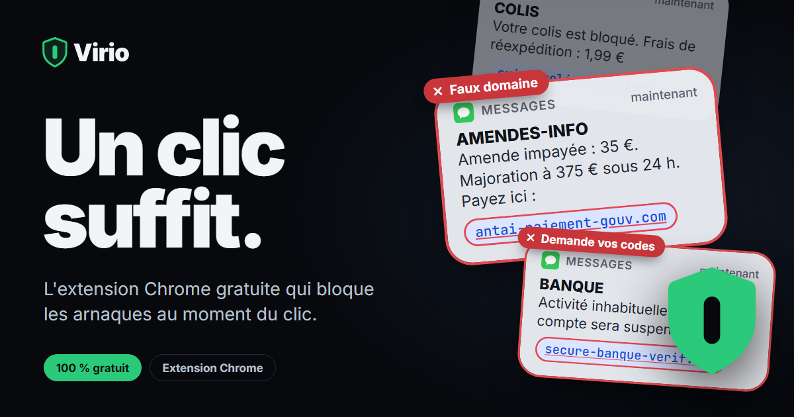

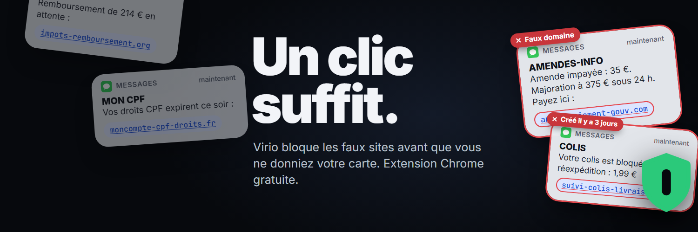

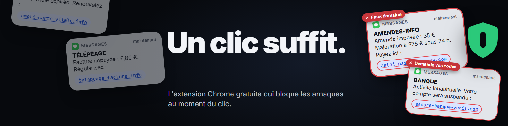

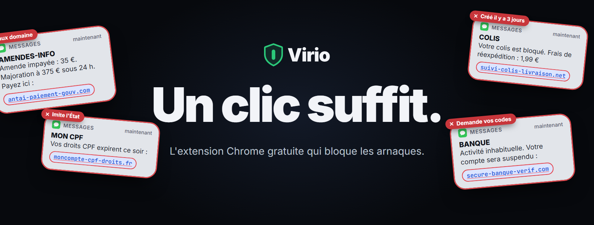

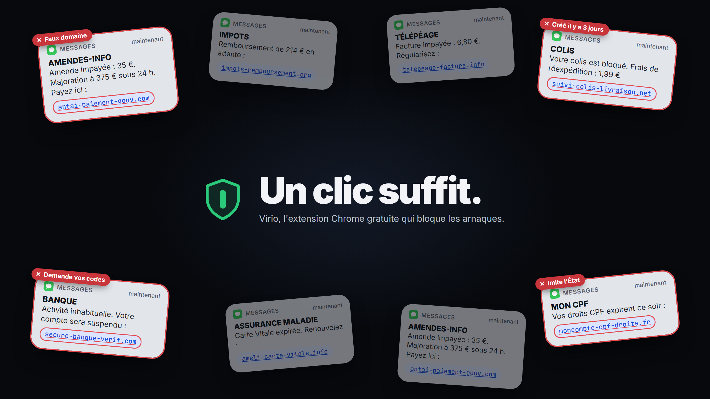

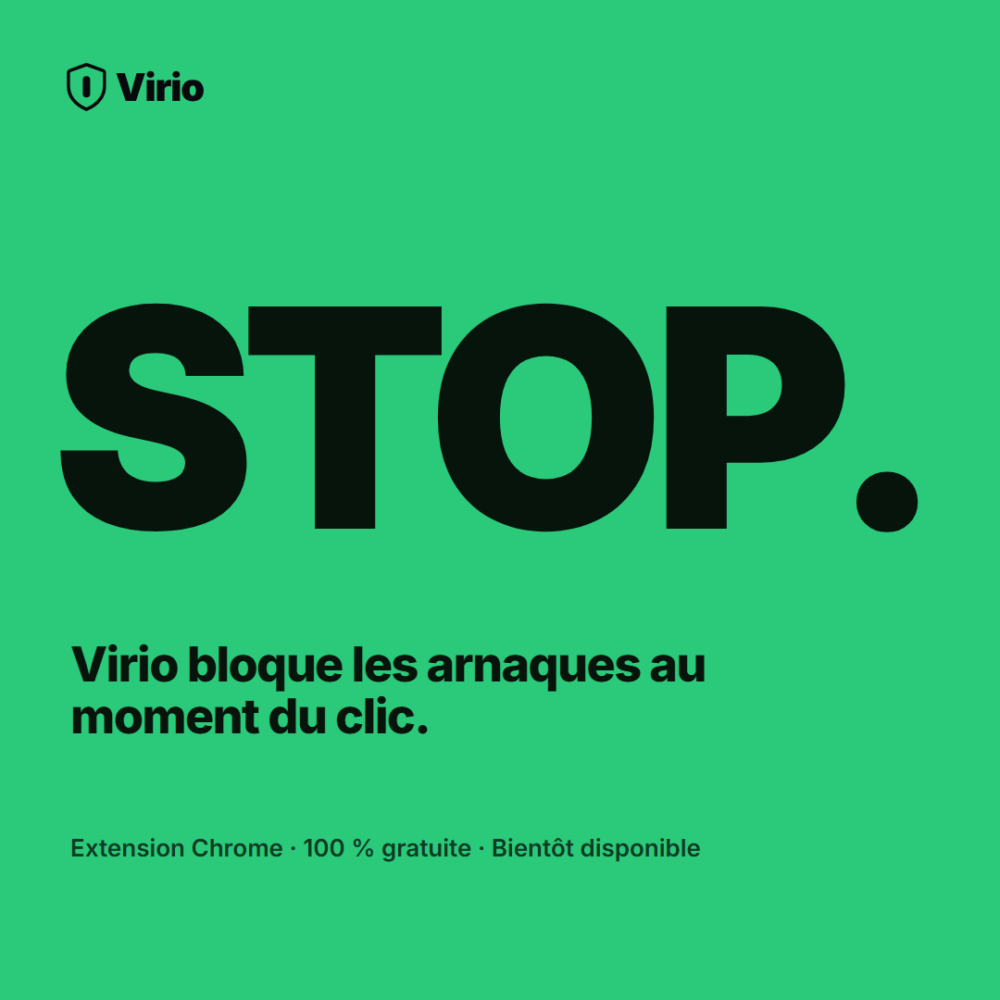

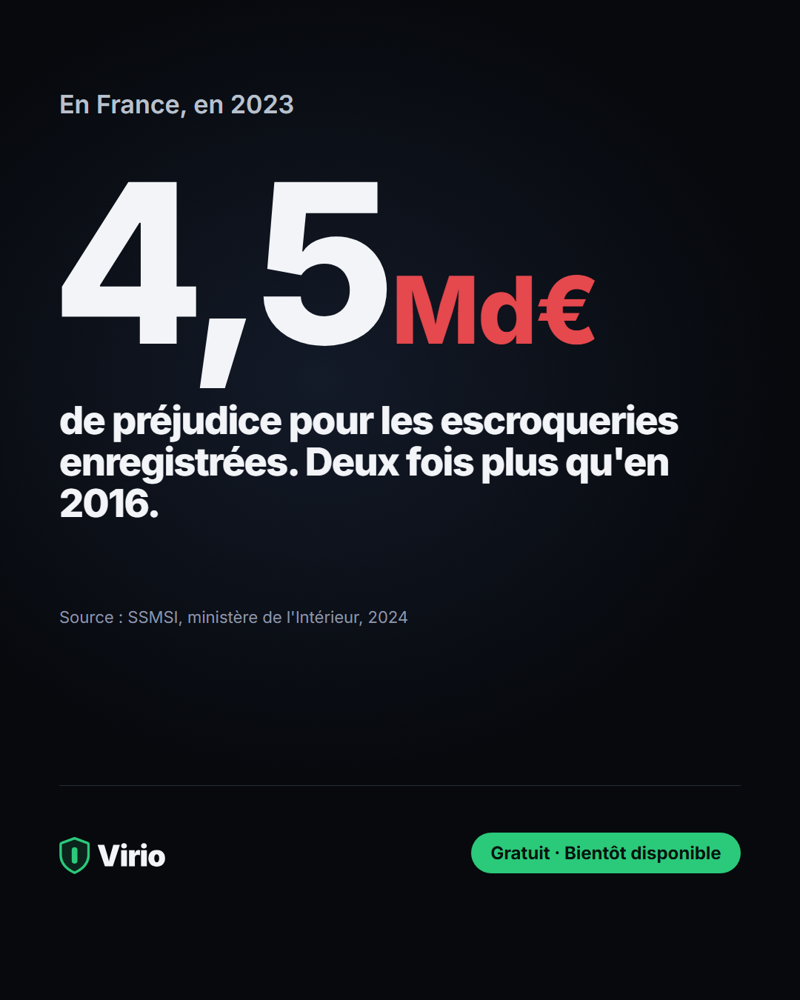

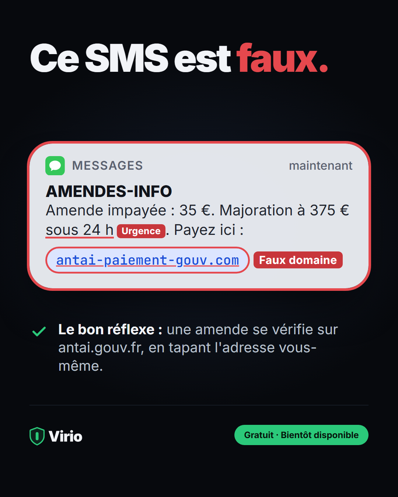

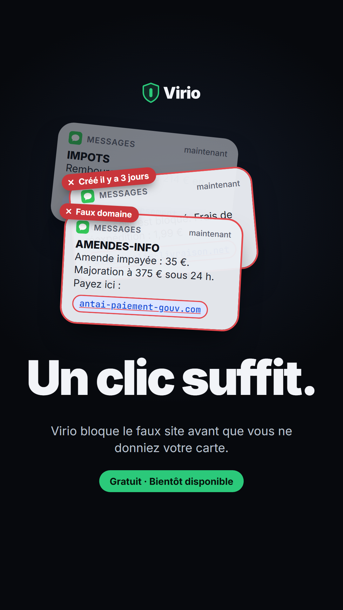

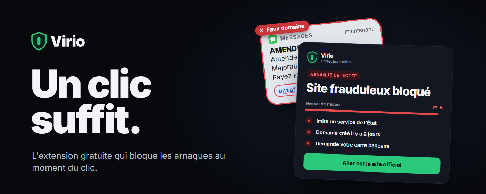

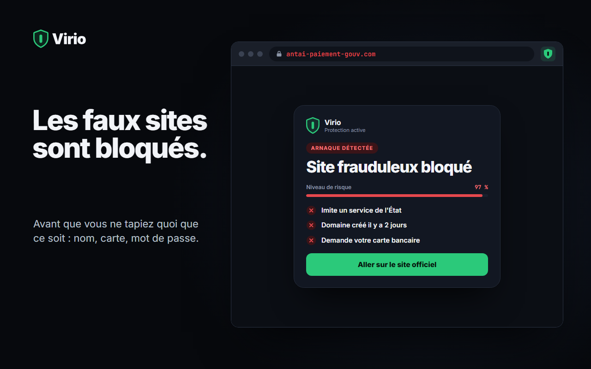

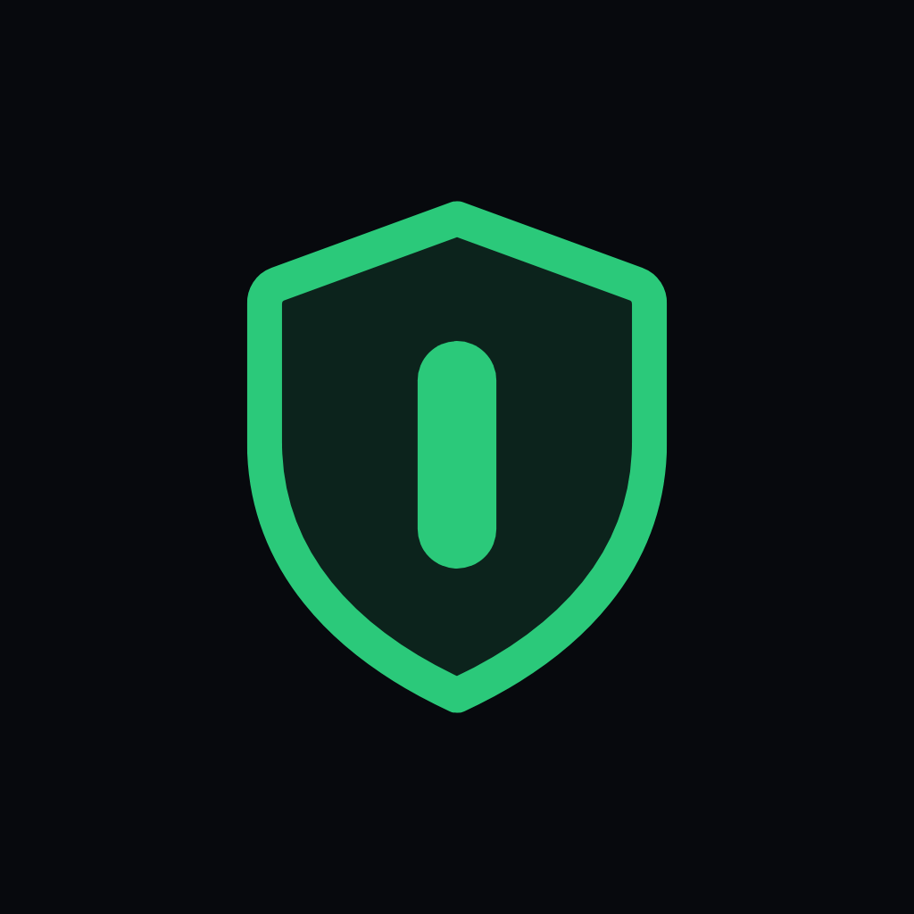
Fichiers
Tout est rangé dans le dossier brand/, à côté de cette page.
| Dossier | Contenu |
|---|---|
| logo/ | Symbole, logos horizontal et vertical en SVG ; PNG transparents dans logo/png/ |
| icones/ | Icônes d'application, photos de profil, icônes de l'extension Chrome (16, 32, 48, 128 px) |
| reseaux/ | Bannières, image de partage, posts et story |
| chrome-web-store/ | Vignettes et captures de la fiche de l'extension (maquettes à remplacer par de vraies captures) |
| github/ | Visuels du README et aperçu social du dépôt |
| _sources/ | Gabarits HTML de chaque visuel, polices Inter et scripts de génération |
Pour modifier un visuel : éditer son gabarit dans _sources/gabarits/, puis lancer python _sources/render.py depuis le dossier brand/.